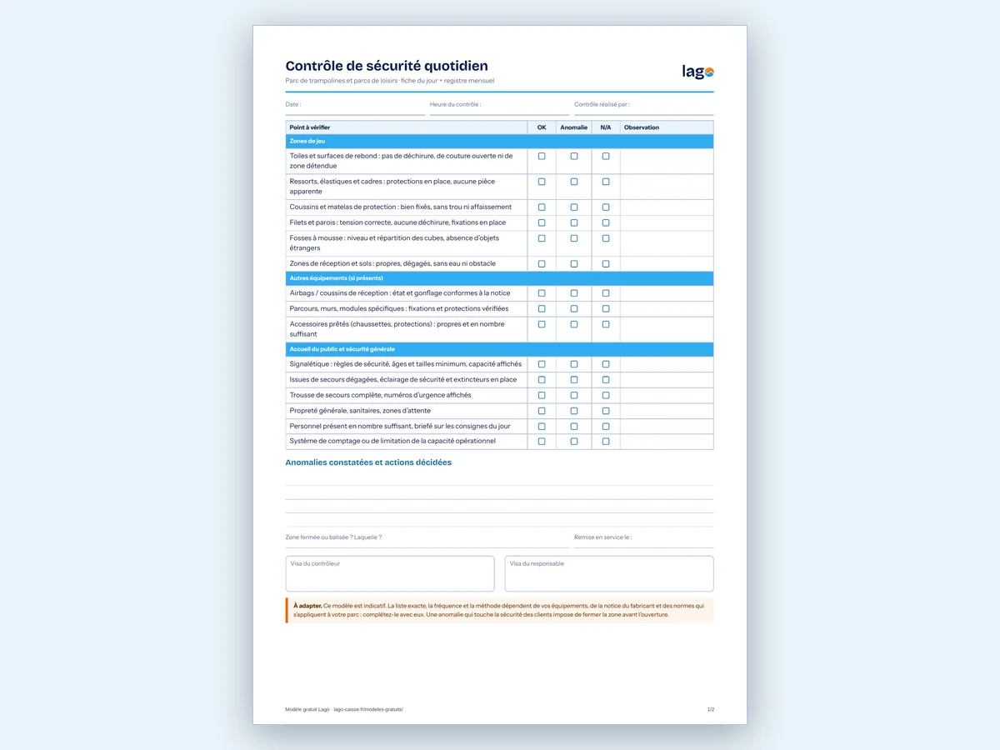

Avant l’ouverture, quelqu’un fait le tour du parc : toiles, protections, filets, bacs à mousse, issues de secours. Cette checklist met le tour sur une page, avec un registre mensuel pour garder la trace. Elle est gratuite, sans inscription.
Télécharger la checklist (PDF, 2 pages)

Ce que contient le modèle
- La fiche du jour : 15 points de contrôle en trois familles (zones de jeu, autres équipements, accueil du public et sécurité générale), avec une case OK, anomalie ou sans objet pour chacun.
- Les anomalies et les actions : un espace pour noter ce qui ne va pas, la zone fermée ou balisée, la date de remise en service.
- Les visas du contrôleur et du responsable.
- Le registre mensuel : une page avec une ligne par jour, pour retrouver d’un coup d’œil qui a contrôlé quoi, et quand.
Comment l’utiliser
- Imprimez une fiche par jour d’ouverture, et le registre une fois par mois.
- Faites faire le tour par un membre de l’équipe formé, avant l’ouverture au public.
- Cochez chaque point, notez les anomalies avec l’heure et la zone concernée.
- Si un point touche la sécurité des clients, fermez ou balisez la zone avant d’ouvrir.
- Faites viser la fiche par le responsable, puis reportez le résultat dans le registre du mois.
Adaptez la liste à votre parc
Ce modèle est un point de départ. La liste exacte, la fréquence et la méthode dépendent de vos équipements, de la notice du fabricant et des normes applicables : pour les parcs de trampolines, la norme NF EN ISO 23659 et les normes expérimentales XP S52-370-1 et XP S52-370-2. Gardez votre notice sous la main et ajoutez ou retirez des lignes en conséquence. Notre guide du contrôle de sécurité quotidien détaille les trois niveaux de contrôle et ce qu’il faut vérifier chaque matin.
Et si vous n’aviez plus de papier ?
Un classeur se perd, se mouille et ne se consulte pas à distance. Dans Lago, la même liste se remplit sur tablette, les opérateurs la signent, et chaque contrôle est archivé en PDF avec la date, la personne et les anomalies. Voir les contrôles et la conformité dans Lago.
Sources : DGCCRF, enquête sur les parcs de trampolines. Modèle indicatif, à adapter avec votre assureur et vos conseils.